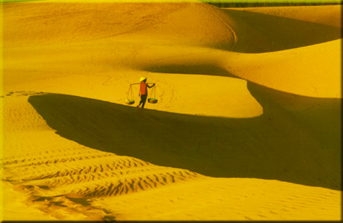

Biển và cát, đó là những gì mà Phan Thiết hào hiệp ban tặng cho những người đến thăm và du lịch tại vùng đất này. Bạn có thể đến đây nghỉ dưỡng vào cả mùa mưa. Phan Thiết là nơi nằm trong vùng nhiệt đới, ít chịu ảnh hưởng của gió mùa đông bắc, khí hậu nóng và khô. Lượng mưa trung bình chỉ có 800 -1.150 mm, nơi có lượng mưa ít nhất trong khu vực Nam Bộ. Phan Thiết là 1 trong những thành phố trẻ nhất trong nước và là trung tâm giao dịch và trao đổi chính của Bình Thuận nơi mà có nhiều cái nhất trong nước như: Tp. Phan Thiết là thành phố biển trẻ nhất nước, có tượng Phật nằm dài nhất nước, Tháp nước Phan Thiết là tháp đẹp nhất nước, có ngọn Hải đăng Khe Gà cao nhất nước và có hồ Biển Lạc rộng nhất nước v.v...
………Từ nhiều năm qua, đồi cát Mũi Né đã trở thành đề tài nổi bật trong các cuộc thi ảnh nghệ thuật, đồng thời đây là một danh thắng nổi tiếng, là biểu tượng và là hình ảnh đẹp của vùng đất Bình Thuận. Bờ biển của Hòn Rơm sạch và đẹp, nước trong xanh. Sóng chạy dưới chân những hàng dừa mát rượi và trĩu quả. Du khách cũng có thể khám phá những bãi biển hoang sơ chưa bị khai thác bởi con người.